Settings
A collection of client-ready websites created by members of our agency. Every card opens a complete, working experience.
Each template is plain HTML, CSS and JavaScript with no build step, no framework and no bundler. They deploy as static files and run straight from the folder.
- Templates live
- 7
- Trackers & cookies
- 0
- Setup required
- None
- Runs on
- Any host
Every site in this collection is designed and built by members of our agency. The brands, products and copy are original concepts created for presentation. Imagery is either licensed royalty-free or generated with AI — nothing here is used under anyone else’s copyright.
This area is locked. Enter the password to continue.
A simulated version of what this password actually protects — fake records, served by the same authenticated API the real gate runs on. Nothing below is real client data.
Simulated client records
Simulated backend info
Change the password used for every locked area of this site.
What actually enforces this. The password is hashed (scrypt, salted) and stored in Supabase; a Vercel serverless function checks it server-side and never ships the hash or the real value to the browser. Unlocking sets a signed, httpOnly session cookie — there is no password anywhere in client-side code or storage. Attempts are rate-limited per IP.
Client Preview runs on its own password, separate from this one — changing either here never touches the other.
Per-client link. Opens one staged build directly — no password prompt, and it never leads anywhere else on this site. Nothing to share but the one URL.
Designed to be opened, not just glanced at.
A growing collection of original, self-contained website templates for client demos. Every one is a working site, not a screenshot — click in and see for yourself.
The gallery
Each template is a fully working, multi-page site. Click through and interact with it.
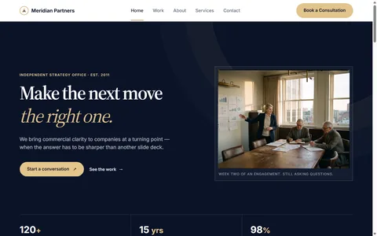
Meridian Partners
An independent strategy office that argues with evidence — four case studies you can switch between, a four-stage engagement model, and published thinking.
View Template
FORGE
An animation-driven gym site — GSAP scroll effects, a Three.js WebGL hero, and synthesized sound.
View Template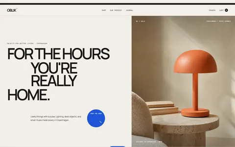
OBLIK
A kinetic design-object store with product filters, color switching, quick views, and an interactive cart.
View Template
PULSE
A cinematic AI-analytics landing page — a scroll-assembled particle dashboard, pinned feature panels, and a live product UI.
View Template
EMBER
A wood-fire restaurant with a cursor-tracked menu, a scroll-driven heat gauge, and a booking flow that actually validates.
View Template
TRIGGERED
An unofficial redesign of a real Singapore game centre — a WebGL lava floor, and a calculator that finally makes peak pricing readable.
View Template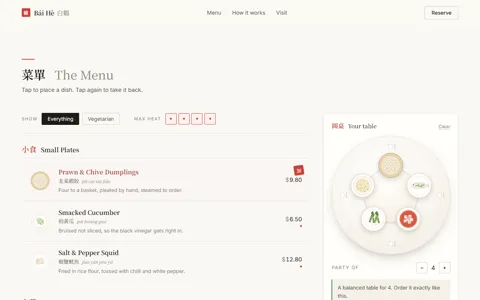
BÁI HÈ 白鶴
A Chinese menu built as a control surface — tap a dish and it lands on a round table that reads the balance of your order back to you.
View Template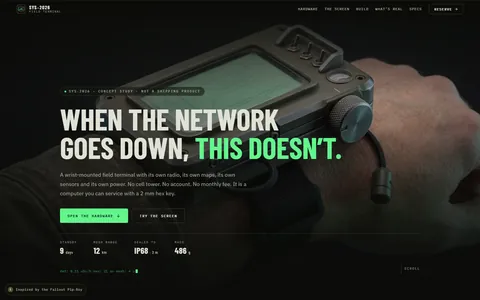
SYS‑2026
A wrist-terminal launch page told entirely through scroll — pinned hardware callouts, a working device screen you can drive with the dial, and a ledger of what’s real.
View Template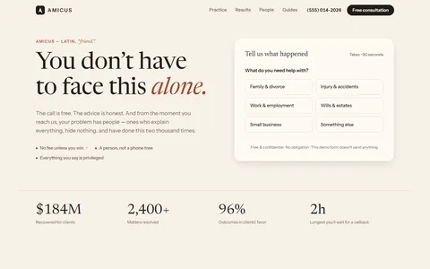
AMICUS
A warm, intake-first law firm — a 30-second contact flow, expandable case-study ledger, attorney profiles, and plain-English guides.
View Template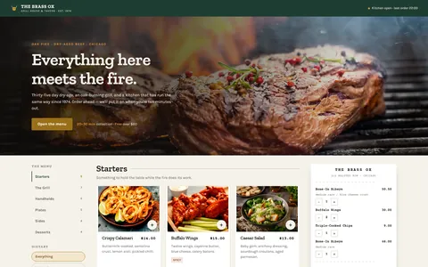
THE BRASS OX
An American chophouse ordering in three zones — a section rail, a photo-led board, and a kitchen ticket that stays on screen and prices every doneness and add-on as you go.
View Template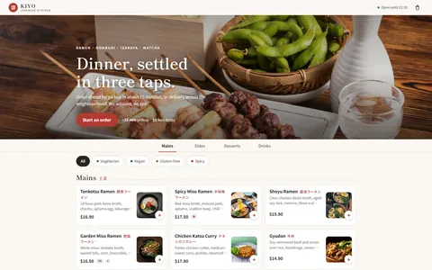
KIYO 清
A mobile-first Japanese kitchen where the site is the ordering flow — 30 dishes, dietary filters, modifier drawers, and a guest checkout that validates like the real thing.
View Template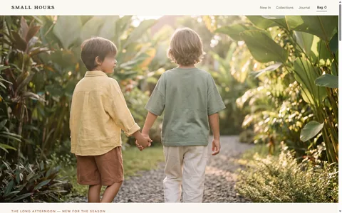
SMALL HOURS
A premium kids' fashion brand built the quiet way — one enormous AI-shot garden campaign, twelve flat-lay pieces in four collections, age-based sizing and a bag that knows when delivery is free.
View Template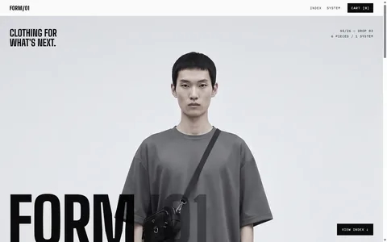
FORM/01
A monochrome techwear label with a broken product grid, full-screen takeovers, and a cart that speaks in mono.
View Template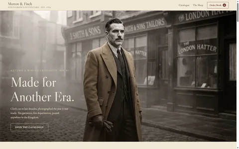
MORROW & FINCH
A working menswear shop dressed as a 1930s catalogue — ten AI-photographed plates in five departments, product pages, and an Order Book cart written like a ledger.
View Template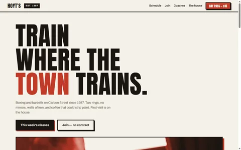
HOYT’S
A neighborhood boxing gym as a riso print — every photo run through a two-color duotone, and a 33-class weekly timetable that marks today's column from the visitor's own clock.
View Template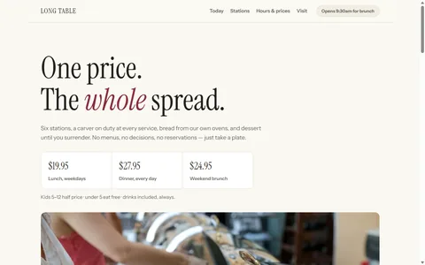
LONG TABLE
An all-day buffet told as plainly as possible — one price, six stations, a seven-day rotation that defaults to today, and an open-now pill computed live from the posted hours.
View Template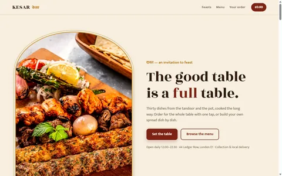
KESAR केसर
A London curry house that orders for the whole table — set dawat feasts priced per head, a 30-dish menu book with inline spice and portion pickers, and a checkout in pounds.
View Template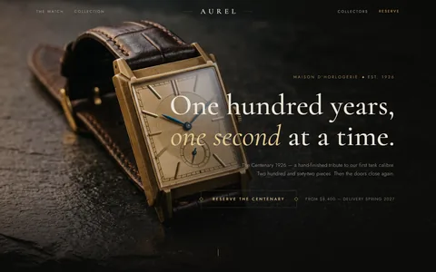
AUREL
An old-money watch house — an AI-filmed light-sweep hero, scroll-driven chapters, and a seven-reference boutique with filters and quick-look.
View Template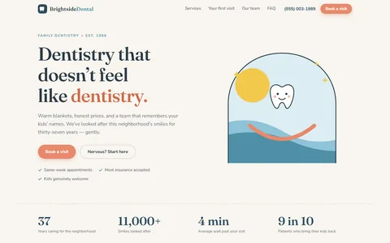
BRIGHTSIDE
A warm family dental practice — a comfort menu for nervous patients, honest pricing, FAQ, and a booking flow that calls you back.
View Template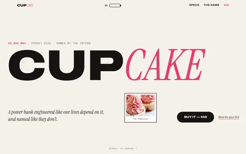
CUPCAKE
A power bank sold through typography — clashing serif/sans posters, a nav battery that charges as you scroll, a flavor switcher that recolors the site, and the odd CC0 cupcake.
View Template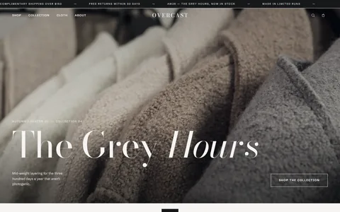
OVERCAST
A clothing label sold on cloth rather than models — a three-page storefront with filters, a product page, and a bag that survives navigation.
View Template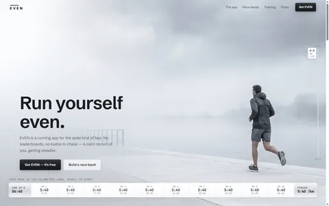
EVEN
A running app that keeps the feed quiet — the page reads as a ten-kilometre run with a live split rail, an evenness score, and a printable race-day pace-band builder.
View Template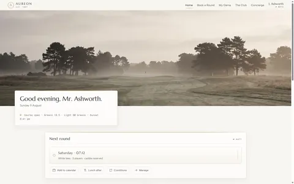
AUREON
A private golf club's digital concierge across five member pages — a live tee sheet, a manifest that writes itself, engraved confirmation tags, and a desk that anticipates lunch, guests and your calendar before you ask.
View Template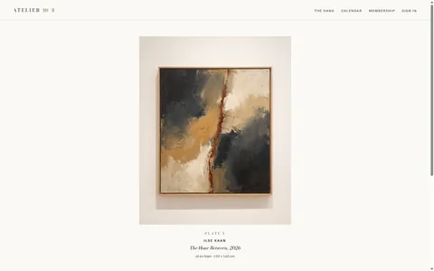
ATELIER № 8
A private art club set as the catalogue of its current hang — one plate per screen under a lifting tissue leaf, provenance and price-on-application enquiries, a calendar of dinners, and membership as a registration of interest.
View Template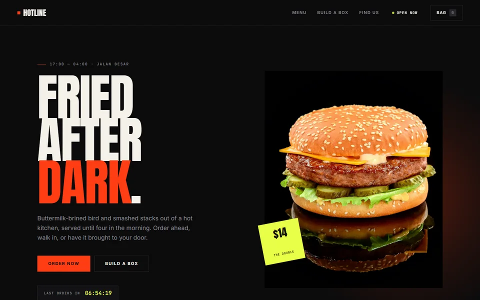
HOTLINE
A late-night fried chicken counter built on one heat scale — a box builder that prices four picks against buying them apart, a live kitchen ticker, and a bag that keeps the same saving all the way to checkout.
View Template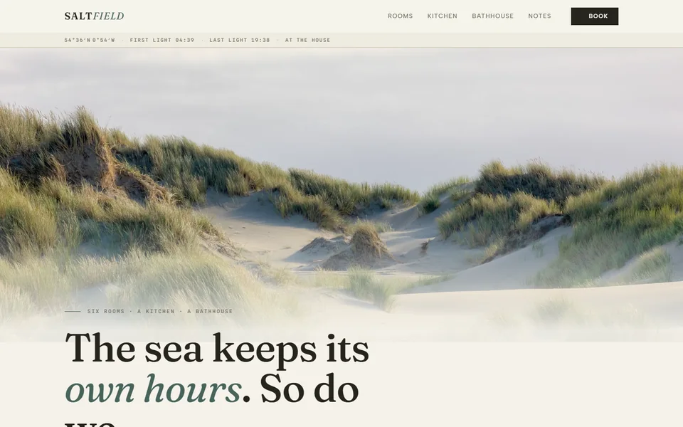
SALTFIELD
A six-room shore house told across seven pages — rooms priced night by night across three seasons, a hold that carries dates between pages, a hand-drawn property map, and a header that computes first and last light for the house's own coordinates.
View Template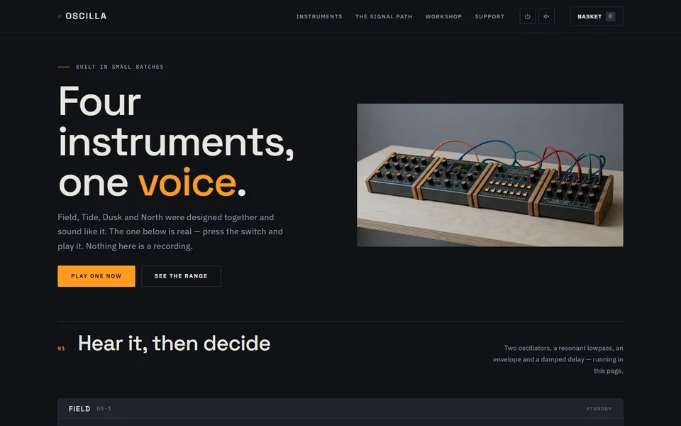
OSCILLA
A synthesizer maker whose website is itself a working synthesizer — a real Web Audio voice with playable keys, a step sequencer and a live oscilloscope, plus a signal-path page where you hear each stage of the chain added one at a time.
View Template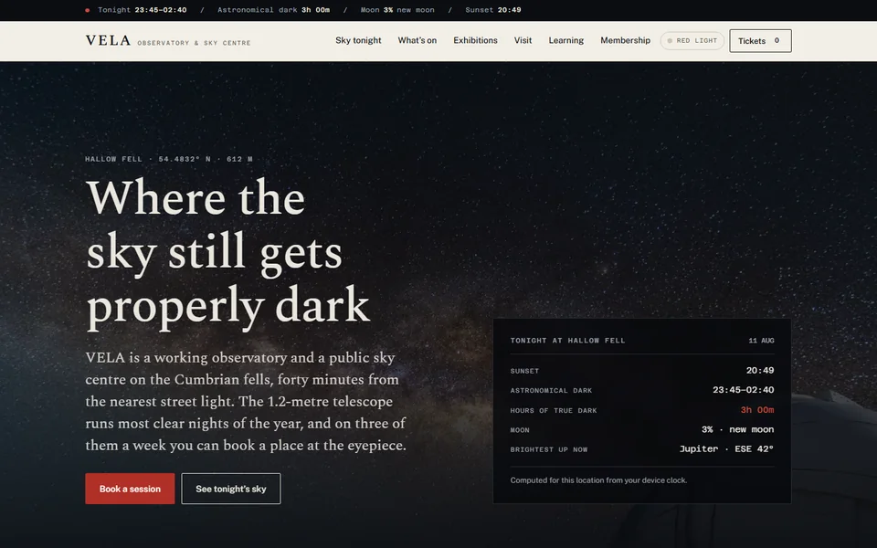
VELA
An observatory whose site computes the real sky — a live star map drawn from a 223-star catalogue, twilight and moon phase worked out for its own latitude, and a programme that refuses to sell a telescope night on the 85 nights a year that never get dark. Carries a full red-light mode, the protocol observatories actually work under.
View Template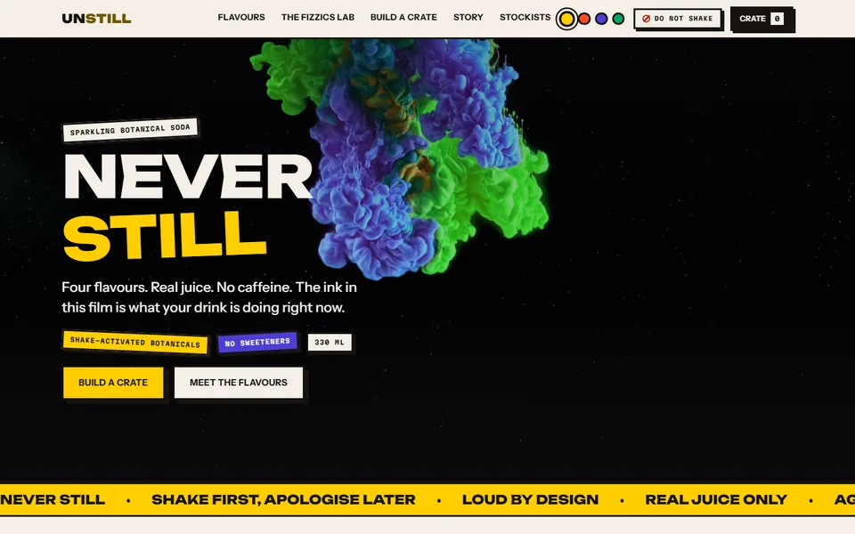
UNSTILL
A sparkling soda brand built around licensed slow-motion ink footage — four flavour themes re-ink the same two films live at zero extra bytes, a crate builder computes its own discounts, a physics lab runs real carbonation and pH chemistry, and a ‘do not shake’ button that absolutely should not be held down.
View Template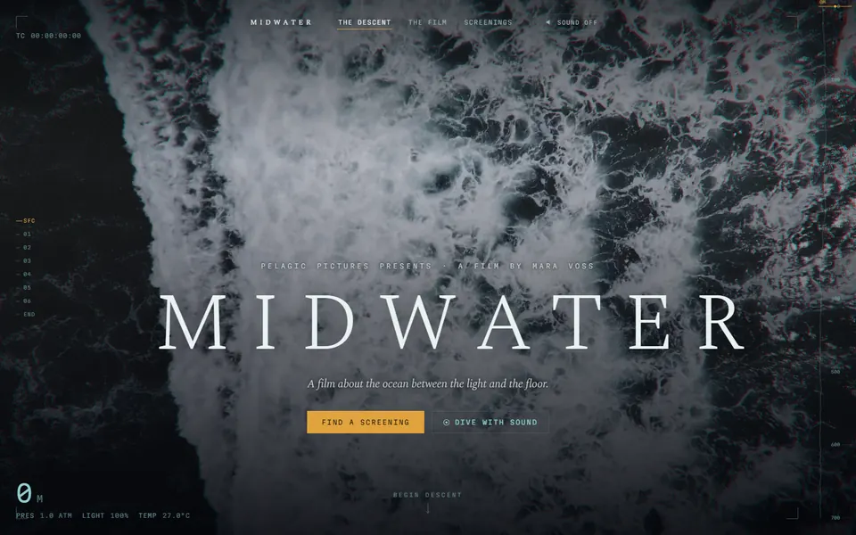
MIDWATER
A feature documentary whose site is the survey record of one descent — six stations of true 4K ocean under a WebGL-treated hero, an echo-sounder strip chart drawn by scroll, depth-derived pressure and light readouts, and an ocean ambience that audibly thickens as you sink.
View Template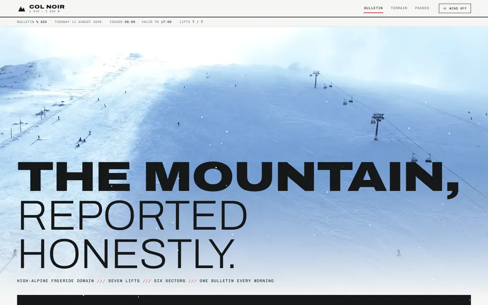
COL NOIR
A freeride mountain whose site is its daily avalanche bulletin — danger ratings, snowpack, wind and lift status all computed per date from one deterministic model, a WebGL contour massif you can turn by hand, wind you can hear at the model's own speed, and day passes priced by each day's forecast.
View Template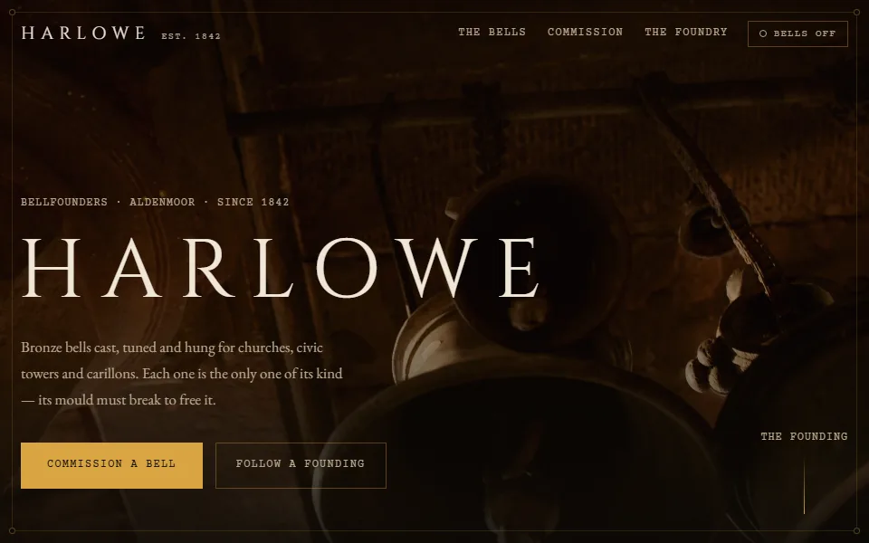
HARLOWE
A bell foundry whose site walks one casting from loam mould to first strike — and where every bell can be struck: strikes are synthesized live from the five true-harmonic partials, and the commission tool computes each bell’s diameter, weight and price from real founders’ physics as you name its note.
View Template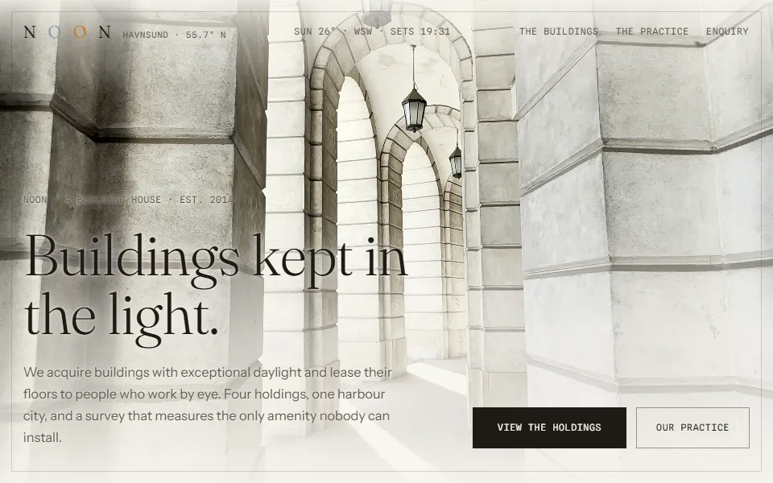
NOON
A building house that leases daylight — four holdings surveyed by real solar geometry: a live sun clock, a draggable day dial that swings each floor plan’s light wash by the computed sun, floors drawn as slabs and plans in code, and rents that are arithmetic, never aspiration.
View Template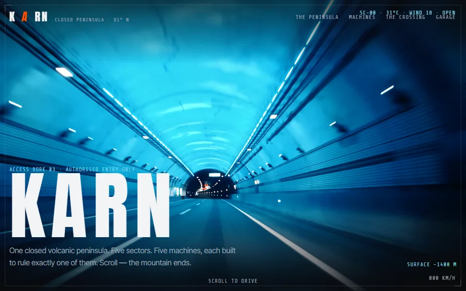
KARN
An automotive world entered through a scroll-scrubbed 4K tunnel drive — five original machines generated as one design language, each ruling a sector of a closed proving peninsula, with every performance figure computed live from declared engineering and a garage-fed comparator feeding the booking manifest.
View Template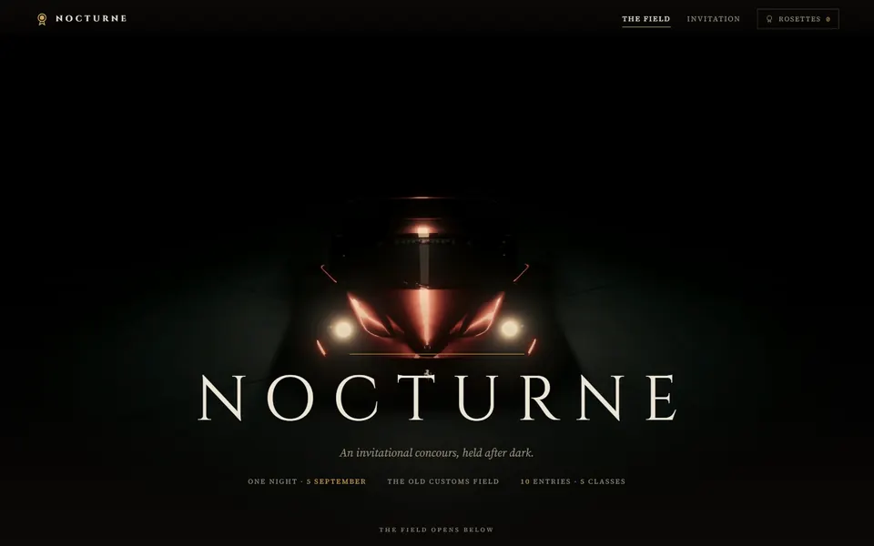
NOCTURNE
An invitational concours judged entirely after dark — the gallery is the judging field, lit only where your cursor stands. Ten real automobiles photographed at night, each with a scored judging card, gilt rosettes you pin to your picks, one sealed entry, and an invitation desk that answers in the house's own voice.
View Template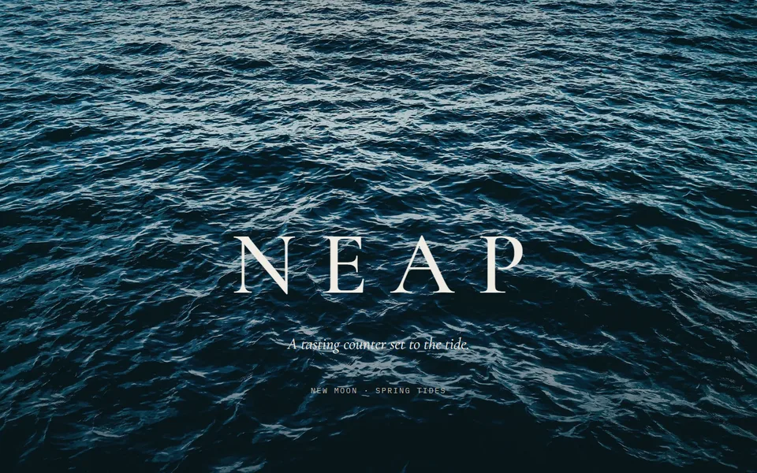
NEAP
A fourteen-seat tasting counter whose menu is written by the moon — real lunar arithmetic decides whether the Flood or the Still menu is served tonight, a computed tide clock maps the next twenty-eight nights, and the dishes themselves are pure typography. One 4K hero, a school of silver fish on film, and a reservations desk that answers in the house’s own voice.
View Template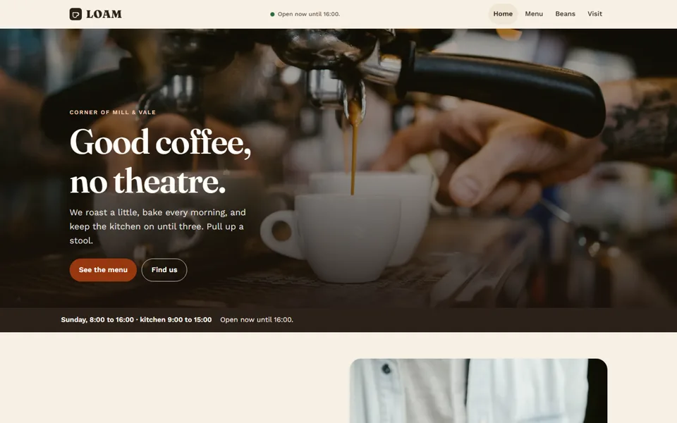
LOAM
A neighbourhood café and small roastery, built thumb-first. Every item on the board is photographed as one consistent shoot; tap anything to build a tray that follows you between pages, steps quantities, notes the counter and computes its own pickup time. A taste finder narrows sixteen items by milk, strength and temperature, and the kitchen honestly closes when the clock says so.
View TemplateLINIA ALVA
A slow-television transmission of one winter day on a fictional alpine railway, built entirely from real 4K footage, most of it one Graubünden filmmaker’s winter work, with no AI imagery anywhere. The page joins the broadcast at your real clock, a lower-third elevation profile rides the whole scroll, tunnels black the screen out and muffle the opt-in carriage audio, and the timetable and seat desk compute live against today.
View TemplateSEJUK°
An equatorial ice house selling snow-fine shaved milk-ice in Singapore flavours, pickup only, because an ice lives fifteen minutes. The board sizes and stacks each peak in a sheet that prices itself live; a kopitiam chit follows you between pages, computes its own shave time, and generates pickup slots from each room’s real hours minus the last-shave cutoff.
View Template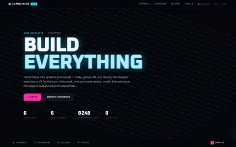
Zhang Zhijie
My own portfolio — five channels of work across web, XR, games, design and operations, with this whole gallery sitting inside it as one showroom.
View Site LockedClient Preview
In-progress client builds, staged here for review before they go anywhere public.
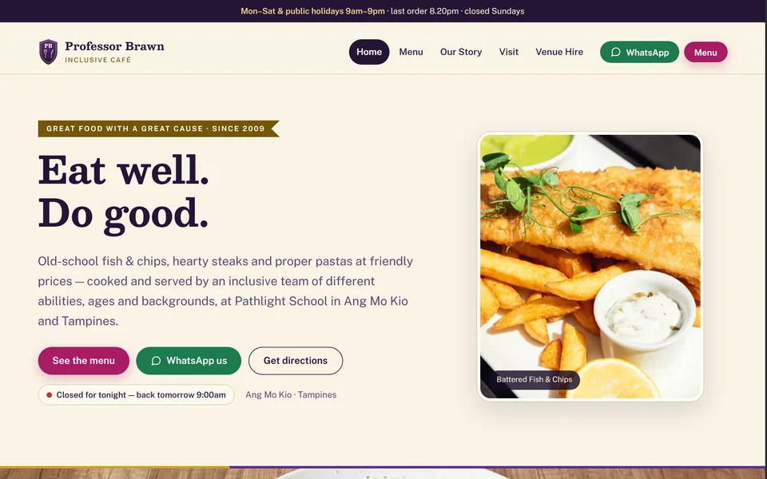
PROFESSOR BRAWN
A full redesign concept for a real Singapore social-enterprise café, built entirely from the client's own recovered photography and verified facts. The menu becomes a browsable course catalogue with an outlet toggle and honest per-café pricing, the mission is woven through as a story rather than a plea, and every fact — hours, parking, WhatsApp lines, venue packages — matches the live business.
Open preview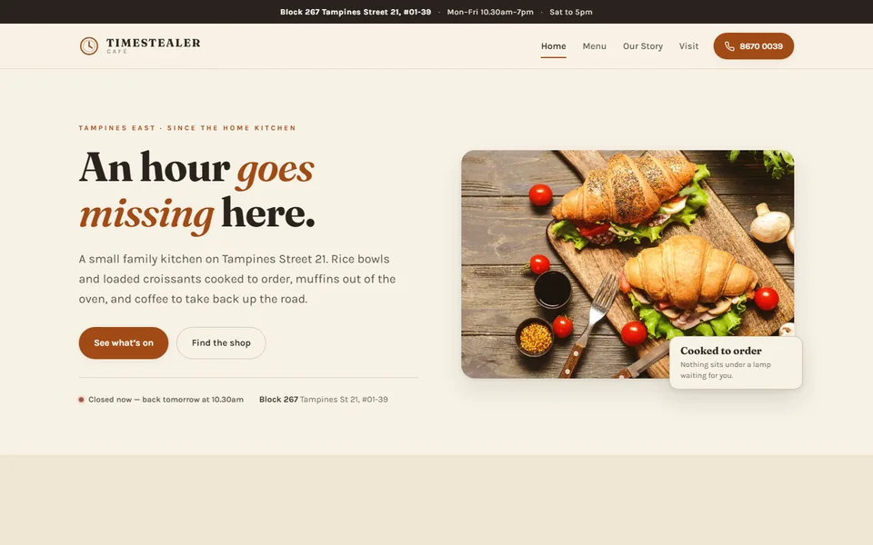
TIMESTEALER CAFÉ
A speculative pitch site for a family-run heartland café on Tampines Street 21 whose only web presence is Instagram. Built strictly on public facts — address, hours, the handful of verified dish prices — with all copy written from scratch, an original wordmark, and licensed stock imagery, so nothing of theirs is reused before they engage us. The menu is a searchable framework driven by one data file, ready for their real price list.
Open preview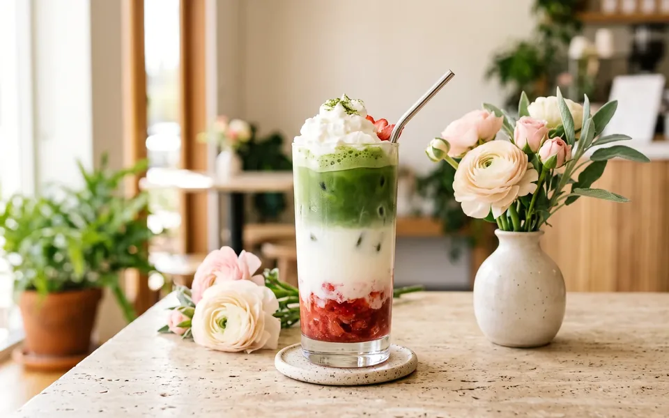
GIG CAFE
A speculative pitch site for a flower-filled Tampines café whose current site serves its menu as twelve JPEG scans. Every fact — address, daily 10–9 hours, Chope reservations, and the full August menu with real prices — was verified against their public presence, then rebuilt as a searchable one-data-file menu with original copy, an original bloom mark, and a concept image set interpreting their floral identity rather than copying it. Mobile-first, with a fixed quick-action bar for menu, booking, calling and directions.
Open preview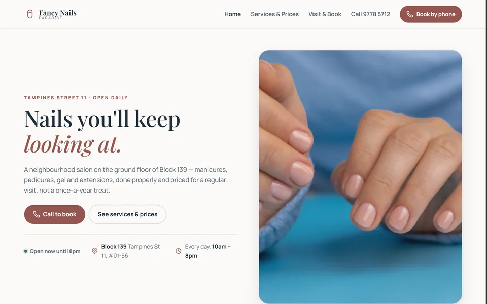
FANCY NAILS PARADISE
A pitch site for a heartland nail salon on Tampines Street 11 with no website of its own. Built mobile-first in the literal sense — the stylesheet has no max-width query at all — because the customer is a woman on a phone deciding where to go tonight: a portrait hero cut as its own file, a searchable price list from one data file, and a sticky call bar in the thumb zone. Palette is anchored to the salon’s real baby-blue interior. Every price is a “from” figure corroborated in published listings, or “ask in salon” — none invented. Photography is licensed Adobe Stock, none of it presented as their salon or their work. Mobile QA found four real bugs, including 300px of overflow from the closed nav drawer; 15/15 viewport-page combos clean after.
Open preview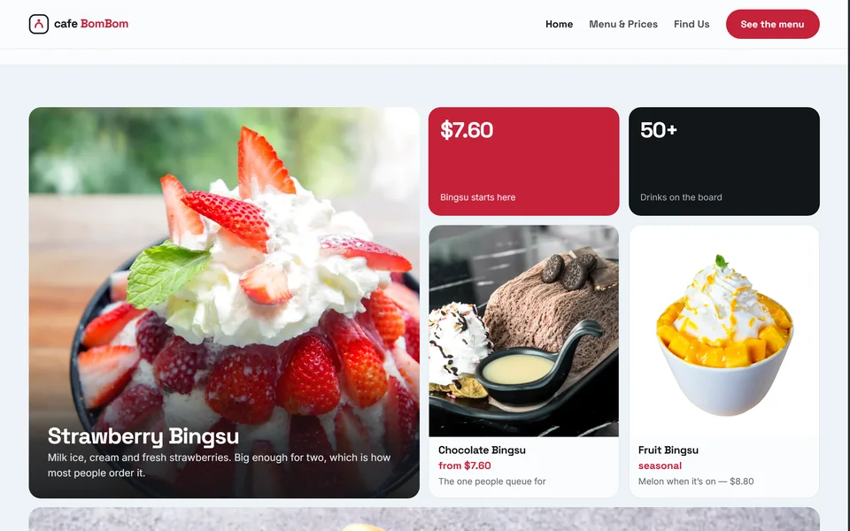
CAFE BOMBOM
A pitch site for the Korean bingsu café on Level 4 of Tampines 1, whose only real presence is a Facebook profile. Built for one person: someone already in the mall with thirty seconds to decide whether to go up — so floor, unit, open-state and entry price all land above the fold, before any photography. The bento is built from the brief’s own hot/cold axis rather than decorated with it, with hierarchy by span and a ticker that breaks the grid. Nine licensed Adobe Stock frames, no AI, none passed off as their shop. Prices are “from” figures with the reporting year recorded per item, because editorial pricing has demonstrably moved since 2022. Measured on throttled 4G: 341KB home, 47KB menu, CLS 0. Mobile QA 15/15.
Open previewOur Clients
Real client sites, shown once they ship and the client agrees to be featured.
No client showcases yet.
This is where real, live projects will appear — a case study, not a template.